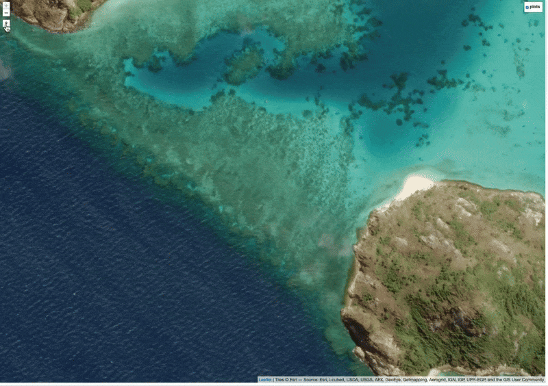
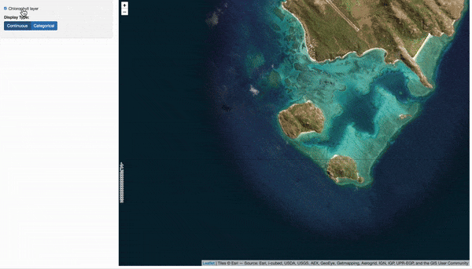
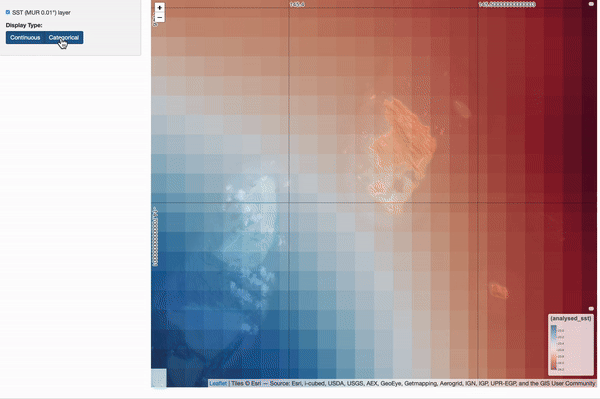
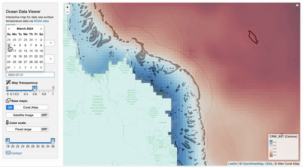

Spatial Tools
a collection of R and javascript tools for interactive mapping, ecology, and conservation
george.roff@csiro.au (05/08/2024)
Collection of spatial tools developed in r,
leaflet and shiny that build upon
leaflet draw functionality implemented in
leafem and leaflet.extras that facilitate
spatial planning and data visualisation. Note: these tools are
functional examples for development and should be
adapted if used (i.e. coded in a more efficient way).
Simple spatial tools
a) rotate polygons

Adds rotate functionality to leaflet by implementing the
javascript leaflet plugin Leaflet.draw.rotate from https://github.com/onaci/Leaflet.draw.rotate in the leaflet_extras
plugin Leaflet.Draw
by using a custom version of the Leaflet.Path.Transform
plugin. Useful for defining selecting non-gridded raster values for
dynamic classification (see “Spatial decision tools” below for
implementation).
- Link to code
- Link to shiny example
b) draw plots

Creating fixed grid size plots (e.g. 100m x 100m, 1ha) within leaflet
currently yet to be implemented. Note: leaflet uses
EPSG:4326 coordinate reference system, so dimensions are
approximate °0.00045 degrees lat/lon coordinates.
- Link to code
- Link to shiny example
Dynamic raster classification
a) static rasters

D ynamic classification of static rasters by interactive
reclassification of n bins and range for each interval.
Adjusting the end point of the slider will dynamically shift the start
point of the next bin. Example code below uses simulated raster data in
R via gstat to approximate clustered raster
cells.
- Link to code
- Link to shiny example
b) dynamic rasters

Allows dynamic classification of rasters as above, but uses dynamic
subsetting of spatial data from the current map extent. The code
extracts satellite data (e.g. SST, Chl a) from the NOAA
ERDAPP servers for the extent of the current map area (see below
Interactive raster data visualisation for explanation), and then
implements interactive reclassification of n bins and range for
each interval. Note - the approach is similar to importing geoserver WMS
tiles for a given map extent except uses raw data in .csv
format to create raster files when zoom/recenter or changing
classification from ordinal/continuous data.
Example uses Multiscale Ultrahigh Resolution (MUR) sea surface temperature (SST) from coastwatch at 0.01° resolution with a 7-day lag from present date.
- Link to code
- Link to shiny example
Interactive spatial tools
i) Visualise raster time-series

Interactive visualisation of historical daily raster data from the NOAA ERDAPP servers.
Features:
Select satellite data sources from from ERDAPP servers
Specify dates for data
Use WMS base maps (coral atlas, ESRI imagery)
Allow custom palettes (e.g. NOAA degree heating weeks)
Example includes Great Barrier Reef and Ningloo (Western Australia)
and data sourced from NOAA CRW and MUR. Note: currently uses
re-rendering of raster images via .csv rather than direct
conversion of .nc files, which is potentially inefficient - revisit with
stars::read_stars over terra::rast at later
stage
- Link to code
- Link to shiny example
ii) Exclude map zones

Leaflet implementation of dynamic cropping of vector and raster layers to exclude zones from existing datasets prior to site selection. Users / stakeholders can draw zones/areas on the map, which are used to inversely mask the raster layer, updating the baselayers to exclude from further analysis. Code includes vector Allen coral atlas data and an aggregated raster layer generated by a Gaussian random field simulation.
- Link to code
- Link to shiny example
iii) Dynamic spatial selection

Dynamic site selection tool for allowing users to interactively
explore and analyze spatial layers through a leaflet map
interface. Example includes simulated raster data of varying gridcell
sizes (Temperature, Sedimentation, DHW, Wave Exposure, Chlorophyll,
Salinity) and a “restoration score” (basic additive algorithm for
categorical raster layers). Underlying code categorises each raster
datalayer into ordinal values (see classify rasters) and calculates an
unweighted mean, but can be implemented with any algorithm.
- Link to code
- Link to shiny example